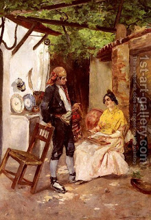

Kiddushin 59 - Stealing the Bride

If one told his fellow: "Go and betroth this woman to me," and the fellow went and betrothed her to himself, she is betrothed to this second person, but he he has acted deceitfully.
Rav Chisida went to a certain place to betroth a woman for his son, and ended up betrothing her to himself! How could he act so? - The family would not give her to his son. But he could at least inform his son and remove the appearance of deceit!? - He saw that other people would betroth her meanwhile.
Rav Gidel was negotiating to buy a piece of land, but Rav Abba bought it first. Rav Gidel asked, "How could you do this?" - Rav Abba answered, "I did not know. But now I will give the land to you." Rav Gidel would not accept the land because of one who hates presents will live." And Rav Abba would not take it because Rav Giddel wanted it first. It was later known as "The land of the Sages," and the students of the Sages could use it.
If one says to a woman, "Please, be betrothed to me, but after thirty days" then thirty days later she becomes his bride. But if in the interim another man came and betrothed her, she becomes the second man's bride.
A related question: if a man betrothed a woman, to take effect after thirty days, but in the interim she changed her mind, is she free or is she still betrothed? In the case above, the second man gave her money, and this was an action, but here she simply refuses, and these are mere words. So what is the law? Rabbi Yochanan says that all the time that the betrothal did not take effect, she can revoke her original consent, that is, "words can negate other words." Resh Lakish argues that "words cannot negate previous words." They continue arguing, citing examples of words negating words in other areas of law.
Art: A flirtation by Vincent de Parades